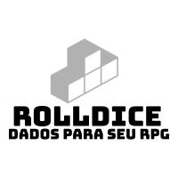

    <mat-toolbar>
      <a class="example-icon favorite-icon"  [routerLink]="['/home/criar-entrar']" >
        
      </a>
      <a class="example-icon favorite-icon"  [routerLink]="['/home/sala']" >
        <span>Sala</span>
      </a>
      <span class="example-spacer"></span>
    </mat-toolbar>
    <div class="container-principal">
      <router-outlet></router-outlet>
    </div>
    <footer class="md-padding">
      <div id="btmFooter" flex>
        <p>developed by Yuu Kuuhaku</p>

      </div>
    </footer>
